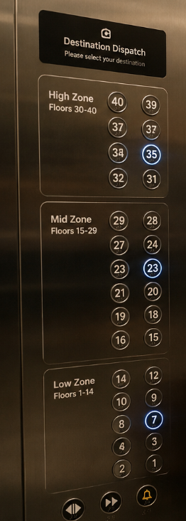
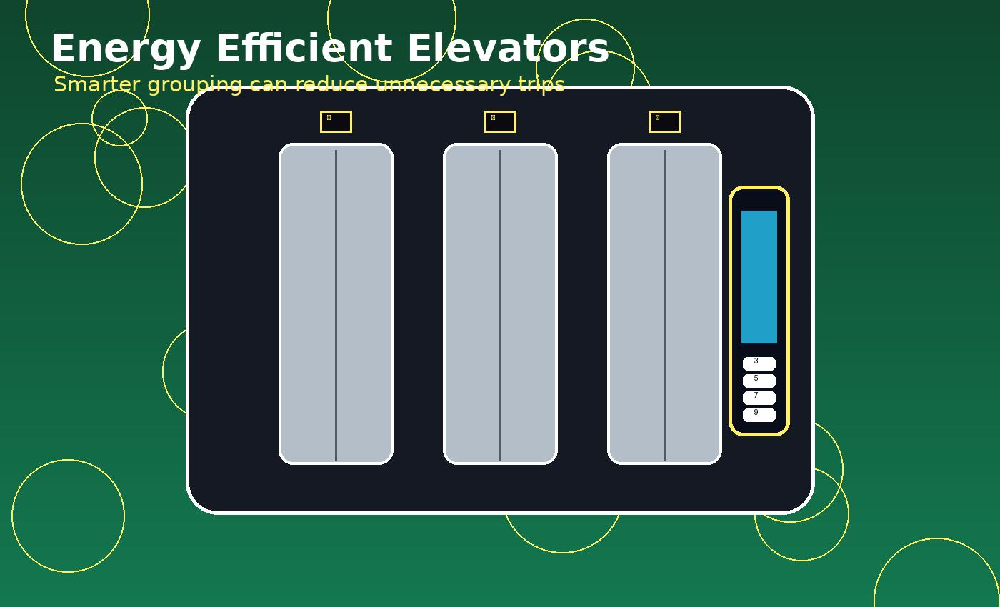
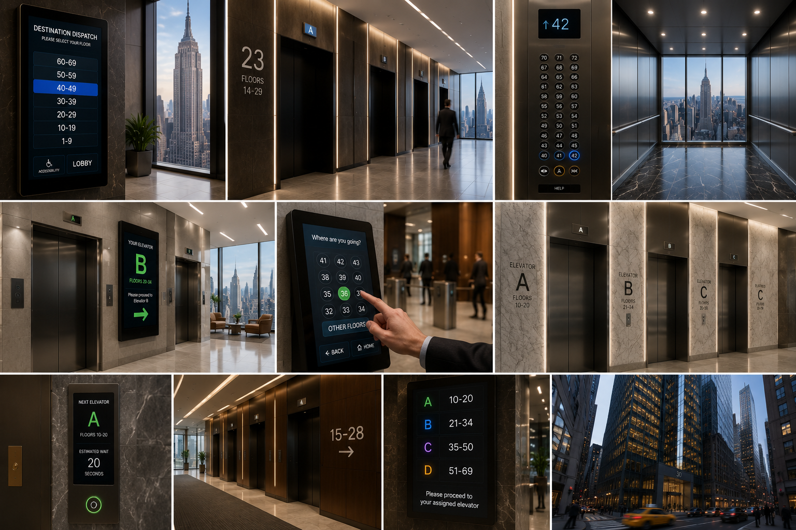
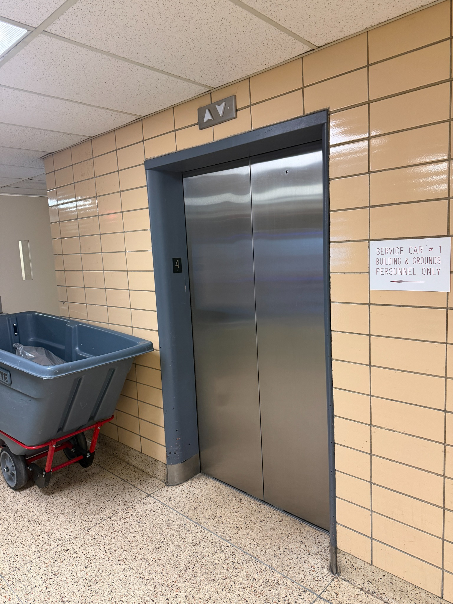
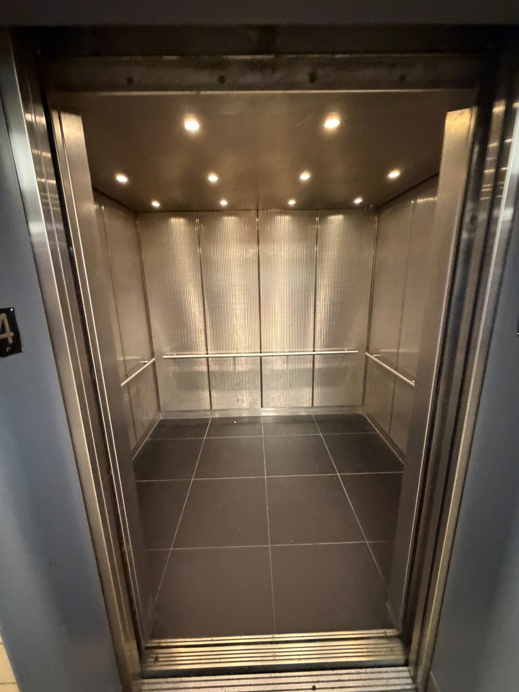
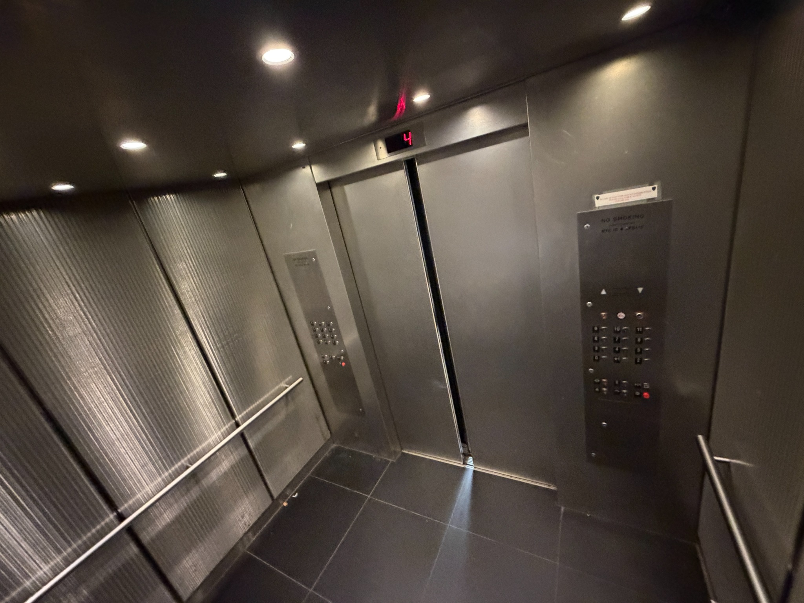

Now: Direction Only
The current button only knows up or down. It does not know where students are actually going.
Less waiting, fewer stops, and smoother elevator movement through destination dispatch, floor zoning, and smart rider grouping.
Instead of everyone pressing random floor buttons inside the elevator, students select their destination floor first. The system then assigns the correct elevator and groups students going to similar floors together.

Students choose a floor on a smart screen before entering.
The current button only knows up or down. It does not know where students are actually going.

Once inside, many different floors get selected, causing extra stops and slower trips.

The smart screen collects destination floors first so riders can be grouped before boarding.


Students move through the lobby faster with less confusion and fewer unnecessary stops.

Smarter grouping can reduce repeated trips, wasted movement, and unnecessary stopping.

Large buildings already use smarter elevator organization to move people more efficiently.


These elevators are used by many students during class changes. A smart lobby screen could organize riders before they enter, making traffic flow easier for students, faculty, staff, and visitors.

Floors 1–10
Short local trips
Floors 11–24
Grouped class traffic
Floors 25+
Fewer extra stops




Students are assigned faster and stop standing around guessing.
Similar destinations are grouped together before boarding.
The lobby becomes more organized during class changes.
Reduced extra trips can help save energy over time.